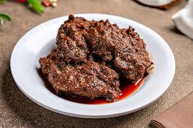
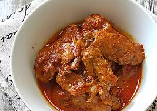
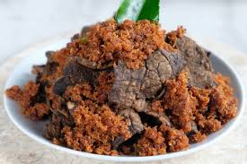
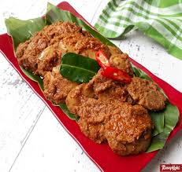
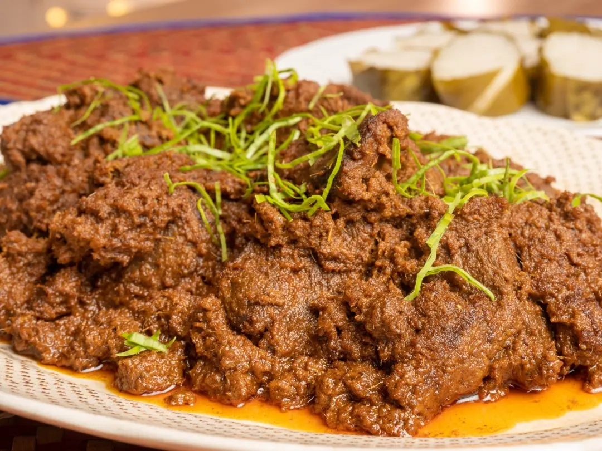
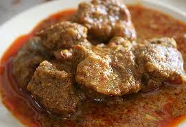

The iconic Minangkabau classic.

A slightly lighter and quicker cooking alternative, using chicken pieces.

A popular variation in Padang cuisine. The beef lung is boiled, sliced, and cooked in spices until crispy or chewy, offering a unique texture.

Made from jengkol (stinky beans) or cubadak (young jackfruit) instead of meat, popular as vegetarian or regional staples in West Sumatra. Buy

A traditional, drier, and very dark version native to Perak, Malaysia.

Technically a transitional stage in the traditional merandang process.